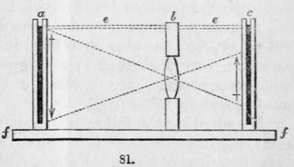

Section III. Photographic Pentagraph
Description
This section is from the book "A Manual Of Photography", by Robert Hunt. Also available from Amazon: A Manual of Photography.
Section III. Photographic Pentagraph
In a letter to Sir John Herschel, which was published in the Athenæum, Mr. Stewart directed attention to a means by which photographs could be readily enlarged. The plan had been in operation amongst photographic artists for some time, but it was not usually adopted, and Mr. Stewart's Letter certainly brought it into general use. The following is Mr. Stewart's description of the required apparatus :—
" One of my friends here, Mr. Heilmann, has lighted on an ingenious method of taking from glass negatives positive impressions of different dimensions, and with all the delicate minuteness which the negative may possess. This discovery is likely, I think, to extend the resources and the application of photography,—and with some modifications, which I will explain, to increase the power of reproduction to an almost unlimited amount. The plan is as follows :—The negative to be reproduced is placed in a slider at one end (a) of a camera or other box, constructed to exclude the light throughout. The surface prepared for the reception of the positive—whether albumen, collodion, or paper—is placed in another slider, as usual, at the opposite extremity (c) of the box, and intermediately between the two extremities (at b) is placed a lens. The negative at a is presented to the light of the sky, care being taken that no rays enter the box but those traversing the partly transparent negative. These rays are received and directed by the lens at b upon the sensitive surface at c, and the impression of the negative is there produced with a rapidity proportioned to the light admitted, and the sensibility of the surface presented. By varying the distances between a and c, and c and 6, any dimension required may be given to the positive impression. Thus, from a medium-sized negative, I have obtained negatives four times larger than the original, and other impressions reduced thirty times, capable of figuring on a watch-glass, brooch, or ring.
"a,c. Slides to hold the frames containing the negative and the receiving surface for the positive.
" b. Frame, with the lens.
" e. Dotted lines, indicating the top of the box or frame. "f,f. Bottom board, or foundation of the same.
" Undoubtedly one of the most interesting and important advantages gained by this simple arrangement is, the power of varying the dimensions of a picture or portrait. Collodion giving results of almost microscopic minuteness, such negatives bear enlarging considerably without any very perceptible deterioration in that respect. Indeed, as regards portraits, there is a gain instead of a loss; the power of obtaining good and pleasing likenesses appears to me decidedly increased, the facility of subsequent enlargement permitting them to be taken sufficiently small, at a sufficient distance (and therefore with greater rapidity and certainty), to avoid all the focal distortion so much complained of; while the due enlargement of a portrait taken on glass has the effect, moreover, of depriving it of that hardness of outline so objectionable in a collodion portrait, giving it more artistic effect, and this without quitting the perfect focal point, as has been suggested.
" But there are many other advantages obtained by this process For copying by engraving, etc., the exact dimension required of any picture may at once be given to be copied from.
"A very small photographic apparatus can thus be employed, when a large one might be inconvenient or impracticable, the power of reproducing on a larger scale being always in reserve. Independent of this power of varying the size, positives so taken of the same dimension as the negative, reproduce, as will be readily understood, much more completely the finer and more delicate details of the negatives, than positives taken by any other process that I am acquainted with.
"The negative also may be reversed in its position at a, so as to produce upon glass a positive to be seen either upon or under the glass. And while the rapidity and facility of printing are the same as in the case of positives taken on paper prepared with the iodide of silver, the negatives, those on glass particularly, being so easily injured, are much better preserved, all actual contact with the positive being avoided. For the same reason, by this process positive impressions can be obtained not only upon wet paper, etc., but also upon hard inflexible substances, such as porcelain, ivory, glass, etc.; and upon this last, the positives being transparent, are applicable to the stereoscope, magic lantern, etc.
" By adopting the following arrangement, this process may be used largely to increase the power and speed of reproduction with little loss of effect. From a positive thus obtained, say on collodion, several hundred negatives may be produced either on paper or on albuminized glass. If on the latter, and the dimension of the original negative is preserved, the loss in minuteness of detail and harmony is almost imperceptible, and even when considerably enlarged, is so trifling as in the majority of cases to prove no objection in comparison with the advantage gained in size, while in not a few cases, as already stated, the picture actually gains by an augmentation of size. Thus, by the sunultaneous action, if necessary, of some hundreds of negatives, many thousand impressions of the same picture may be produced in the course of a day.
"I cannot but think, therefore, that this simple but ingenious discovery will prove a valuable addition to our stock of photographic manipulatory processes. It happily turns to account and utilizes one of the chief excellencies of collodion—that extreme minuteness of detail which, from its excess, becomes almost a defect at times—toning it down by increase of size till the harshness is much diminished, and landscapes, always more or less impleading on collodion from that cause, are rendered somewhat less dry and crude.
"A very little practice will suffice to show the operator the quality of glass negatives—I mean as to vigour and development best adapted for reproducing positives by this method. He will also find that a great power of correction is obtained, by which overdone parts in the negative can be reduced and others brought up. Indeed, in consequence of this and other advantages, I have little doubt that this process will be very generally adopted in portrait-taking.
"Should your old idea of preserving public records in a concentrated form on microscopic negatives ever be adopted, the immediate positive reproduction on an enlarged readable scale, without the possibility of injury to the plate, will be of service".
Continue to: